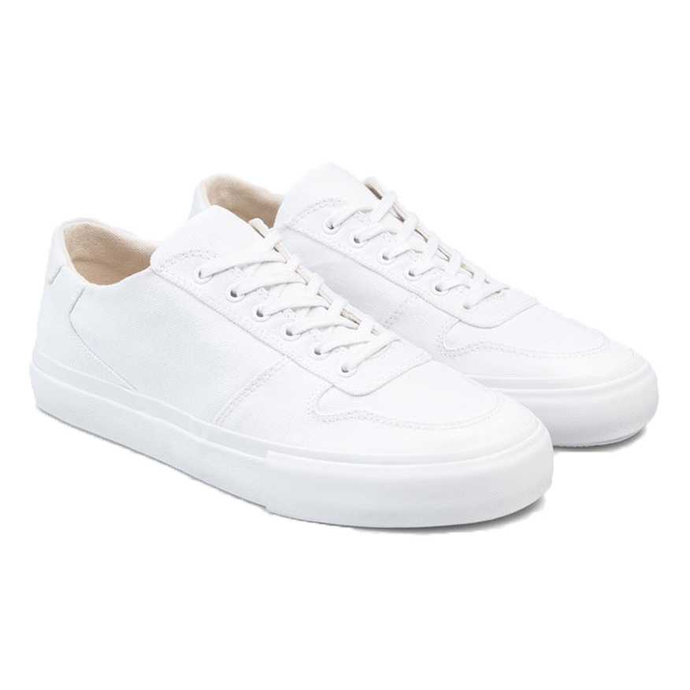

Unother Basic White
Here’s the closest alternative I could find to the BBall Low. Unother prides themselves in their modern and sleek design while promoting a more conscious alternative to leather sneakers. Their vegan leather is made of a nappa-like alternative made of polyurethane. Unfortunately, the brand is only a concept and does not have a set launch date as of now.
Shop Now
Collective Canvas Bal White

If you’re still set on the BBall Low, hopefully I can persuade you with the Ball White from Collective Canvas. These share some close similarities to the BBall Low except for the material. These sneakers are made of organic cotton canvas so they are a perfect shoe for the summer months ahead.
Shop Now
Sydney Brown Low Sneaker White
If you’re searching for something similar to the Achilles Low, Sydney Brown makes a very minimal white sneaker. These too are made of faux-nappa but also feature a cork-covered, recycled-fiber insole. I’m not sure a sneaker can get more sustainable than this.
Shop Now
Yatay Neven Low White

These have to be the winner for an Achilles Low alternative. While pictured are brown organic cotton laces, they also come with a white pair. The issue many white sneakers have is that the toe is too round. The Neven Low, however, shares the same narrow toe as Common Projects sneakers. These are made of recycled raw materials as well as BioPolyols.
Shop Now